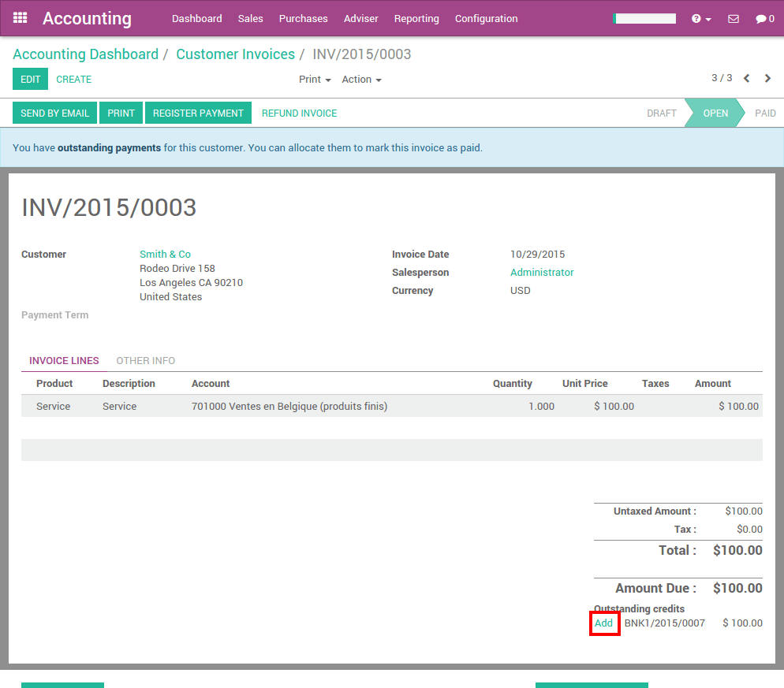
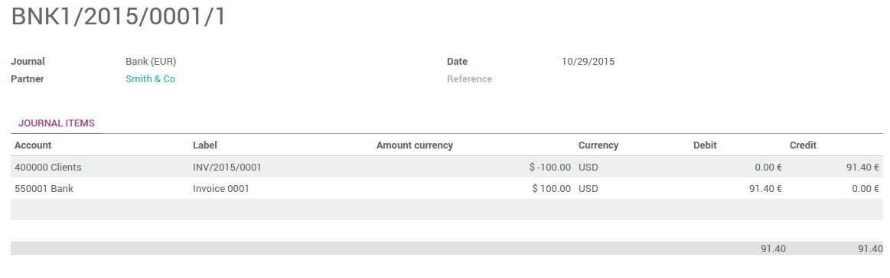

概述
YuanCloud provides multi-currency support with automatic currency gross or loss entry adjustment. There are a few things YuanCloud has been to ease the user's life.
All the account transactions will be done using the company currency. However you can see two extra fields with the journal entry where secondary currency and amount will visible. You can create multi-currency journals of force a specific currency.
When creating an invoice, the currency can be changed very easily; however YuanCloud takes the company currency as a default assignment. It will convert all the amounts automatically using that currency.
配置
启用多币种
For information about enabling Multi-Currency, please read the document: YuanCloud的多币种是如何工作的？
配置你的日记账
In order to register payments in other currencies, you have to remove the currency constraint on the journal. Go to the accounting application, on the journal, click on .
Check if the currency field is empty or in the foreign currency in which you will register the payments. If a currency is filled in, it means that you can register payments only in this currency.

多币别发票和供应商账单
Now that you are working in a multi-currency environment, all accountable items will be linked to a currency, domestic or foreign.
发票
You are now able to set a different currency than the company one on your sale orders and on your invoices. The currency is set for the whole document.

供应商账单
You are now able to set a different currency than the company one on your purchase orders and on your vendor bills. The currency is set for the whole document.
多币种付款
In the accounting application, go to . Register the payment and indicate that it was done in the foreign currency. Then click on Confirm.

The journal entry has been posted but not allocated.
Go back to your invoice () and click on Add to allocate the payment.
多币种银行对账单
When creating or importing bank statements, the amount is in the company currency. But there are now two complementary fields, the amount that was actually paid and the currency in which it was paid.
When reconciling it, YuanCloud will directly match the payment with the right invoice. You will get the invoice price in the invoice currency and the amount in your company currency.
汇兑汇率日记账
Go to and look for the Exchange Difference journal entries. All the exchange rates differences are recorded in it.